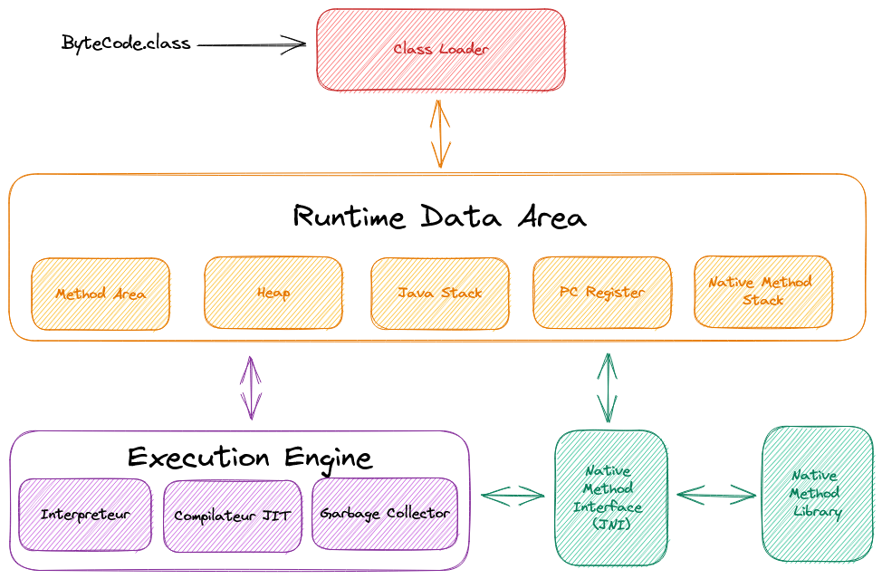
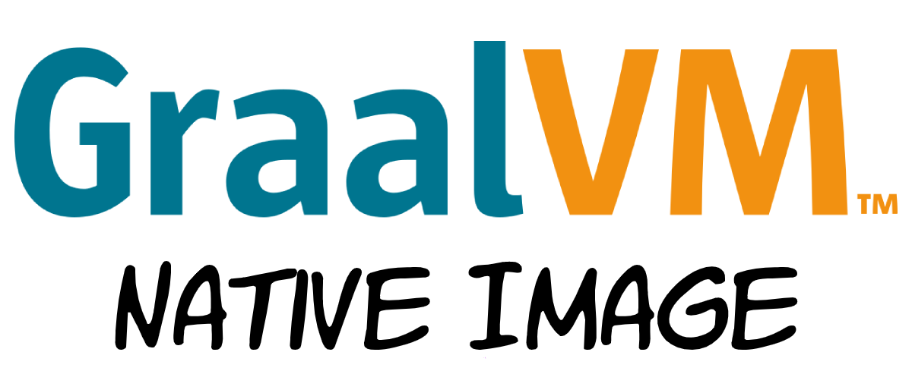
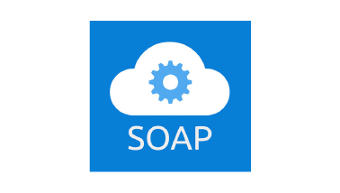

Décollez avec la compilation native en Java : Boostez vos performances et économisez de l'énergie !
Mode historique de la compilation Java
La JVM
Limitations et contraintes
vérification du code...
chargement des classes ...
compilation dynamique ...
collecte des informations de profilage ...
mémoire nécessaire pour stocker les infos de profilage ...
temps et mémoire nécessaire au démarrage ...
Dans un contexte cloud, avec ces opérations cumulées, le temps de démarrage et la mémoire affectent directement le coût de déploiement d'une application
La compilation native en Java
GraalVM a commencé comme un projet de recherche chez Oracle Labs il y a 10 ans
Au cœur même du projet se trouve le compilateur Graal - un compilateur moderne et hautement optimisé, créé à partir de zéro
Le compilateur Graal fonctionne également comme un compilateur ahead-of-time (AOT), produisant des exécutables natifs
Principe de la compilation native
Contrairement au mode JIT, où la compilation et l'exécution se produisent en même temps, en mode AOT, le compilateur effectue toutes les compilations pendant la construction, avant l'exécution :
Analyse des Points-to
Initialisations au moment de la génération
Heap snapshotting

Bénéfices de la compilation native en Java

L'effort de toute une communauté
Et Concrètement

LOGIN+A12345@DESKTOP MINGW64 /c/Workspace/honey/api/target (main)
$ ls -lrt panoramasante-api*
-rw-r--r-- 1 636020 panoramasante-api.jar.original
-rw-r--r-- 1 56511090 panoramasante-api.jar
-rw-r--r-- 1 150600440 panoramasante-api
-rw-r--r-- 1 32 panoramasante-api.build_artifacts.txt